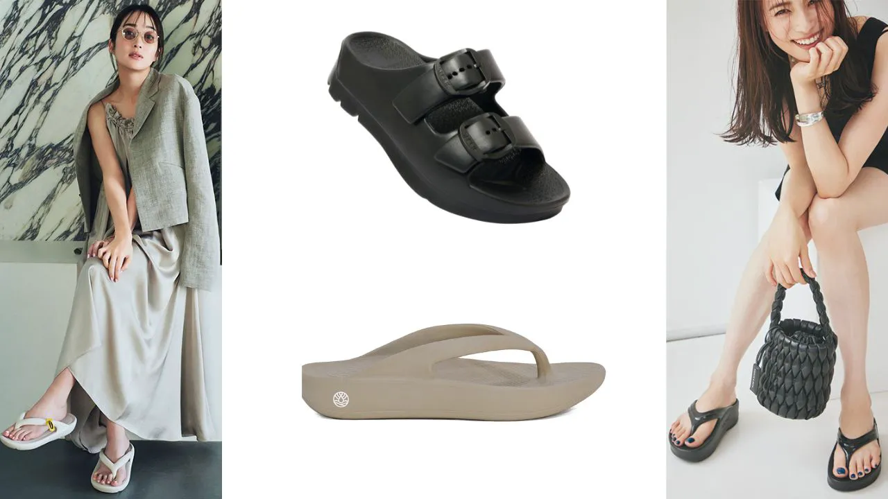
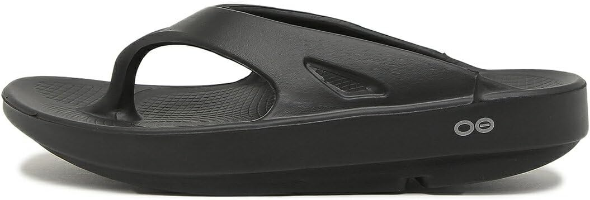
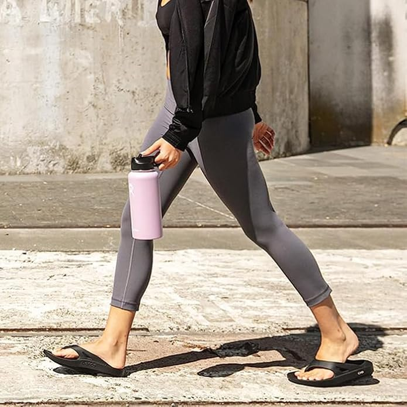
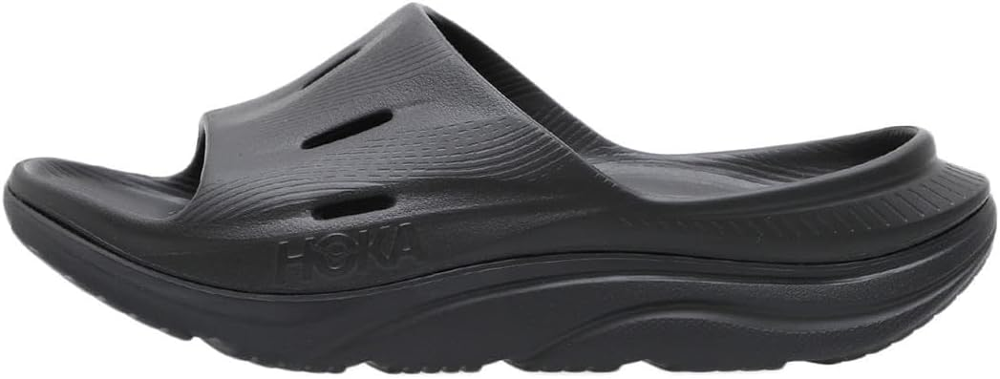
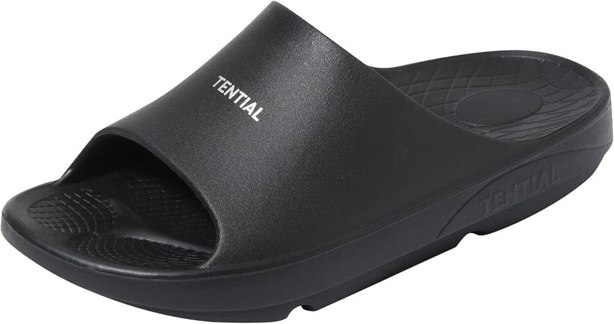
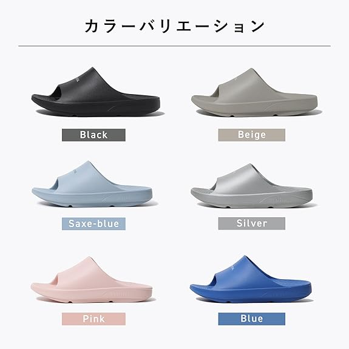
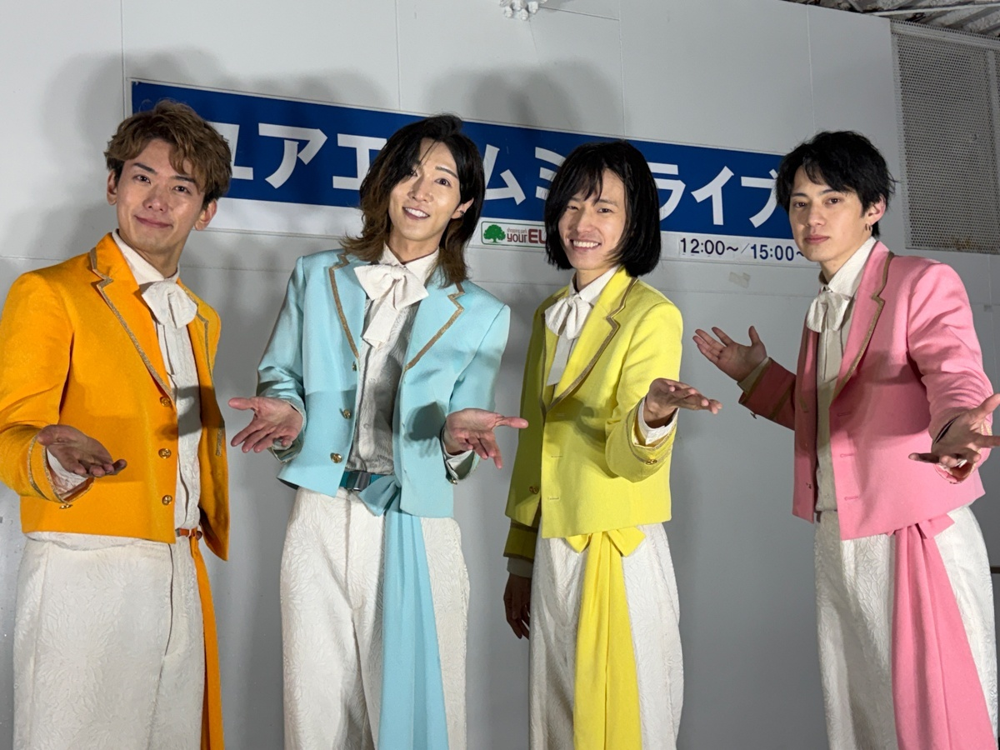

「一日中歩き回った後、足裏がジンジンしてもう一歩も歩きたくない」「立ち仕事で夕方には足がパンパン」「ランニング後の脚のダルさをケアしたい」——その疲れ、普通のサンダルやスリッパでは絶対にとれません。
いま足の疲れに悩む人の間で爆発的に売れているのが「リカバリーサンダル」。履くだけで足への衝撃を吸収し、"歩く"を"回復"に変える一足です。とはいえ「OOFOS、HOKA、TENTIAL…種類が多すぎて結局どれ？」と迷いますよね。
この記事では、2026年に本当に売れている3大ブランドを忖度なしで徹底比較。履き心地の違い・向いている人・失敗しない選び方まで、これ一本で解決します。読み終わる頃には、あなたに最適な"相棒"が必ず見つかります。
タイプ別・あなたに合う1足はこれ
- とにかく柔らかく癒されたい／運動後 → OOFOS（元祖・マシュマロの柔らかさ）
- しっかり歩く・お出かけ・ランナー → HOKA（反発で前に進む）
- 普段履き・立ち仕事・日本人の足に → TENTIAL（日本発・バランス型・ギフトにも）
そもそもリカバリーサンダルとは？普通のサンダルとの違い
リカバリーサンダルとは、足にかかる衝撃を吸収し、疲労回復をサポートする目的で設計された高機能サンダルです。元々はアスリートが「運動後のクールダウン用」に使っていたものが、その快適さから一般にも爆発的に普及しました。
普通のサンダルとの決定的な違いは、次の3点です。
- ① 衝撃吸収素材：着地のたびに足裏・膝・腰にかかる衝撃を、特殊素材が吸い取る
- ② アーチサポート：土踏まずを支え、足全体で体重を分散。長時間でも疲れにくい
- ③ ロッカーボトム構造：ソールが緩やかにカーブし、歩行をスムーズにアシスト
「クッション性が高い＝ただ柔らかい」ではありません。沈み込みすぎると逆に疲れます。"沈み込み"と"支え"のバランスこそが各ブランドの個性であり、選びの肝です（後述）。
【2026最新】リカバリーサンダル市場が"今アツい"理由
ここ数年、リカバリーサンダル市場は異次元の伸びを見せています。トレンドとして今、知っておくべきトピックは3つ。
- 🔥 市場が急拡大：パイオニアのOOFOSは約42億円市場を開拓。後発のTENTIALはリカバリーサンダルが前年比234%成長と爆伸び
- 🔥 2026年は新作ラッシュ：OOFOSが「PLUS」シリーズ（クッション最大5%向上）、HOKAが「ORA Recovery Slide 3」を投入
- 🔥 "ファッション化"が進行：かつての"おじさんサンダル"のイメージは過去のもの。カラバリ・デザインが洗練され、普段履き・サウナのサ活・ギフトにも
つまり今は、各ブランドが本気で技術を競い合う"買い時"。裏を返せば選択肢が多く迷いやすい時期でもあるので、次章からの比較が効いてきます。
失敗しないリカバリーサンダルの選び方【プロの4チェックポイント】
ここを押さえないと、「サイズが合わず鼻緒が痛い」「柔らかすぎて逆に疲れた」という典型的な失敗をします。
① 履き心地の"方向性"で選ぶ（最重要）
柔らかく脱力したいならOOFOS（マシュマロ系）、歩きやすさ・反発も欲しいならHOKA（反発系）、柔らかさと安定のバランスならTENTIAL（バランス系）。
② 形状（スライド or トング）で選ぶ
スライド（バンド）は脱ぎ履きラク・靴下OK・オフィス向き。トング（鼻緒）は素足で開放的・夏向き（※鼻緒ずれに注意）。
③ 使うシーンで選ぶ
近所・ゴミ出しだけか、通勤・お出かけまで歩くか、運動後のリカバリーか、立ち仕事・室内履きか。シーンで最適解は変わります。
④ サイズ感（これで失敗する人が最多）
リカバリーサンダルはブランドごとにサイズ感がかなり違います。OOFOSは大きめ、TENTIALは日本人の足型基準。レビューの「ワンサイズ下げて正解」等の声は必ずチェックを。
| チェック項目 | 見るべきポイント |
|---|---|
| 履き心地 | 柔らかさ／反発のバランス（沈みすぎ注意） |
| 形状 | スライド（楽）／トング（開放感） |
| シーン | 近所・通勤・運動後・室内 |
| サイズ | ブランド別のクセ＋口コミを確認 |
【比較表】OOFOS vs HOKA vs TENTIAL 早見表
迷ったらまずこの表。3ブランドの個性は驚くほど明確に分かれます（価格は2026年6月時点の目安）。
| 項目 | 🥇 OOFOS | HOKA | TENTIAL |
|---|---|---|---|
| ひとことで | 元祖・究極の柔らかさ | 歩ける反発系 | 日本発・バランス型 |
| 履き心地 | マシュマロ（脱力） | 弾力・前に進む | 柔らかさ＋安定 |
| コア技術 | OOfoam（衝撃約37%吸収） | メタロッカー構造 | 異硬度EVA 2層＋40万足型 |
| 得意シーン | 運動後・完全休養 | よく歩く日・通勤 | 立ち仕事・室内・普段履き |
| 代表モデル | OOriginal／OOahh | ORA Recovery Slide 3 | Recovery Sandal Slide |
| 価格帯 | ¥6,780〜 | ¥7,100〜9,900 | ¥7,290〜7,920 |
| サイズ感 | 大きめ | 標準〜やや大きめ | 日本人向け(2XS〜2XL) |
| 詳細 | 見る | 見る | 見る |
3ブランド徹底比較レビュー
🥇 OOFOS（ウーフォス）｜"元祖"にして究極の柔らかさ

リカバリーサンダルのパイオニア。世界中のアスリートが愛用する絶対王者です。独自素材「OOfoam（ウーフォーム）」が、一般的なEVA素材より衝撃を約37%多く吸収。足を入れた瞬間の「マシュマロに乗っているようなフワフワ感」は一度味わうと戻れません。土踏まずを包むアーチ設計で、足裏全体に体重を分散します。
| コア技術 | OOfoam（衝撃約37%吸収）＋アーチサポート |
|---|---|
| 代表モデル | OOriginal（トング）／OOahh（スライド） |
| 2026新作 | OOriginal PLUS／OOahh PLUS（クッション最大5%向上） |
| サイズ感 | 大きめ（ハーフ〜1サイズ下げ検討） |

メリット
- 圧倒的な柔らかさ
- 衝撃吸収No.1クラス
- 実績と信頼・丸洗い可
デメリット
- 柔らかい分、長距離"歩く"には不向き
- サイズが大きめ
HOKA（ホカ）｜"歩ける"リカバリー。反発でスイスイ前へ

厚底ランニングシューズで有名なHOKAのリカバリーライン。OOFOSの"脱力"とは対照的に、適度な弾力と反発力があるのが特徴。ソールが揺りかご状の「メタロッカー構造」で、足を踏み出すと自然にコロンと前へ進む感覚。最新の「ORA Recovery Slide 3」は4つの気流チャネルで通気性も抜群です。
| コア技術 | 超厚ミッドソール＋メタロッカー構造 |
|---|---|
| 代表モデル | ORA Recovery Slide 3（スライド）／ORA Recovery Flip（トング） |
| 特徴 | 4つの気流チャネルで通気性◎・サトウキビ由来フットベッド |
| サイズ感 | 標準〜やや大きめ |
メリット
- 反発で歩きやすい
- 軽量・通気性◎
- スポーティで普段履きも◎
デメリット
- OOFOSほどの"沈む柔らかさ"はない
- 人気で品薄の色も
TENTIAL（テンシャル）｜日本発・"失敗しない"バランス型

いま前年比234%成長で急拡大する日本発ブランド。40万人の足型データを1mm単位で分析し、日本人の足に最適化。フットベッドとアウトソールに異なる硬度のEVAを重ねた2層構造で、「柔らかさ」と「安定性」を高次元で両立。アーチサポート＋ロッカーボトムで歩きやすく、カラバリ・サイズ展開（2XS〜2XL）も豊富。室内履きや立ち仕事、ギフトにも人気です。
| コア技術 | 異硬度EVA 2層構造＋40万足型データ最適化 |
|---|---|
| 代表モデル | Recovery Sandal Slide（ほか ウォーム／ホーム） |
| 満足度 | アスリート120名 満足度95%／推奨意向96% |
| サイズ感 | 日本人向け・2XS〜2XLと幅広い |

メリット
- 日本人の足に合う
- 柔らかさと安定の両立
- 豊富なカラー＆サイズ・ギフト人気
デメリット
- 海外勢に比べ歴史は浅い
- 人気色は品薄になりやすい
タイプ別・あなたに最適な1足
迷ったら——"癒し"最優先ならOOFOS、"歩く"ならHOKA、"日本人向けの万能・失敗回避"ならTENTIAL。この3択で外しません。
よくある質問（FAQ）
医療機器ではないため「治療」効果を保証するものではありませんが、衝撃吸収・アーチサポートにより足や脚への負担を軽減する設計です。多くの利用者が「疲れにくい」と実感しています。
ブランドでサイズ感が異なります。OOFOSは大きめなので人によってはサイズダウン、TENTIALは日本人向けで選びやすい。必ず各商品のサイズ表とレビューを確認しましょう。
もちろんOK。特にHOKAやTENTIALは歩行性能・デザイン性が高く普段履きに向いています。OOFOSは長距離より"休養"向けです。
多くのモデルが丸洗い可能で衛生的。素材特性上、乾きも早いものが主流です（詳細は各製品の表記を確認）。
柔らかさ・運動後のケアならOOFOS、歩く・お出かけならHOKA、普段履き・立ち仕事・ギフトならTENTIAL。あなたの主な使い方で選べば失敗しません。
まとめ｜"足の疲れ"は、もう我慢しなくていい
最後に結論を整理します。
- OOFOS：究極の柔らかさ。運動後・立ち仕事の"完全休養"に最強
- HOKA：反発で歩ける。通勤・お出かけ・ランナーに
- TENTIAL：日本人の足に最適。万能・室内・ギフトで失敗なし
リカバリーサンダルは、一度履けば「なぜもっと早く買わなかったのか」と必ず思う"自己投資"です。毎日の足の疲れから解放される快適さを、ぜひ体験してください。
📖 関連記事
